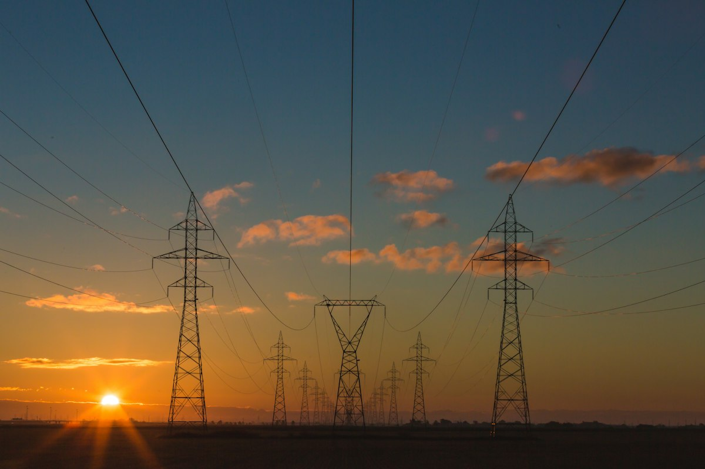
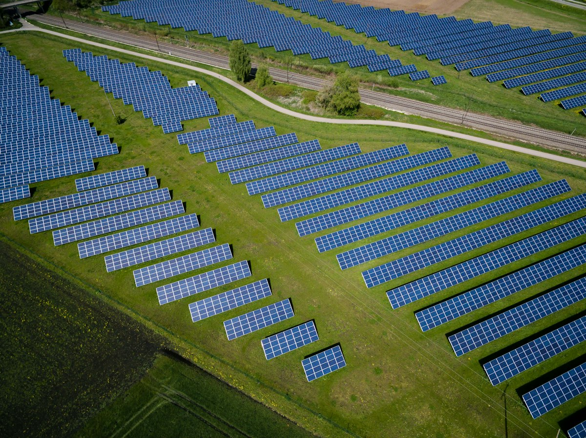

Temel FaaliyetYeşil Dönüşüm ve Sürdürülebilirlik Danışmanlığı
Firmaların uluslararası fon, hibe ve kalkınma finansmanı sağlayan kurumlara yönelik teknik, mali ve çevresel raporlama dosyalarını akademisyen kadromuzla hazırlıyoruz.
Uluslararası ve ulusal kalkınma kuruluşlarının (EBRD, IFC, AB Hibe Programları) talep ettiği Yatırım Fizibilite, CAPEX ve Karbon Ayak İzi dosyalarında; Teknokent merkezimizde geliştirdiğimiz sektör temelli AI ajanları ile alanında yetkin akademisyen havuzumuzun gücünü birleştiriyoruz.

Sektör Temelli AI Ajanı Destekli Raporlama
EBRD, IFC, AB Fonları ve kalkınma bankaları formatlarına tam uyumlu teknik dosyalama.
Ar-Ge merkezimizde geliştirilen ajanlar akademisyenlere derinlemesine ön rapor hazırlar.
Alanında yetkin profesör ve araştırmacılar geniş perspektiften nihai raporlamayı tamamlar.
Sermaye harcamalarından uzaktan eğitime yüzlerce kurumsal projede kanıtlanmış başarı.
Şirketimizin faaliyetleri; uluslararası fon ve hibeler için yeşil dönüşüm raporlaması, uzaktan eğitimin yapay zeka ile modernizasyonu ve operasyonel süreç optimizasyonu olmak üzere 3 ana eksende toplanmaktadır.

Temel FaaliyetFirmaların uluslararası fon, hibe ve kalkınma finansmanı sağlayan kurumlara yönelik teknik, mali ve çevresel raporlama dosyalarını akademisyen kadromuzla hazırlıyoruz.
Uzaktan eğitimin yapay zeka ile modernize edilmesi odağında; 7/24 ders içi AI eğitmen asistanları, otomatik dokümantasyon ve ölçeklenebilir LMS platformları geliştiriyoruz.
 Danışmanlık & Büyüme
Danışmanlık & Büyüme
Kurumların operasyonel iş süreçlerini haritalandırıyor, BT altyapılarını güçlendiriyor; kurumsal dijital itibar ve stratejik B2B iş geliştirme adımlarını yönetiyoruz.
Ankara Üniversitesi Teknokent bünyesinde yürüttüğümüz Ar-Ge çalışmaları kapsamında; şirketlerin dijital dönüşümü, sürdürülebilirlik izleme ve ESG iyileştirme süreçleri için firma bazlı ama sektör temelli AI ajanları geliştirdik.
Kurumunuzun enerji tüketim, hammadde, üretim ve operasyonel verileri güvenli kanallarla toplanır.
Ar-Ge ekibimizce eğitilen AI ajanları, büyük veriyi ve emisyon katsayılarını işleyerek akademisyenlere kapsamlı ön raporlar hazırlar.
Alanında uzman akademisyenler ön raporları derinlemesine inceler; çok daha hızlı ve geniş perspektiften doğrulanmış nihai rapor setini oluşturur.
10 yılı aşkın kurumsal tecrübemiz, Ar-Ge altyapımız ve tarafsız akademik metodolojimizle kurumsal müşterilerimize değer katıyoruz.
Hazırladığımız Yatırım Fizibilite, CAPEX ve Karbon Ayak İzi raporları; EBRD, IFC, Dünya Bankası ve kalkınma finansmanı sağlayan kuruluşların teknik standartlarına tam uyumludur.
TOBB Türkiye Yazılım Meclisi, ATO (Sicil: 27/2672), KOSGEB Onaylı KOBİ (54823), HİB ve YASAD tescillerimiz ile denetlenebilir kurumsal şeffaflık sunuyoruz.
Yüzlerce kurumsal projede başarıyla uygulanan iş modelleri, pazar analizleri ve kurumsal yazılım mimarisi birikimimizi projelerinize aktarıyoruz.
Kurumunuza ait üretim, tüketim ve mali veriler hiçbir zaman halka açık modellerde paylaşılmaz; Türkiye lokasyonlu güvenli altyapılarda veya kendi sunucularınızda işlenir.
Danışmanlık ve raporlama süreçleri devam eden kurumsal müşterilerimiz; sözleşme durumlarını, hazırlanan teknik dosya taslaklarını ve aşama onaylarını portal.arkinovasyon.com.tr üzerinden 7/24 şeffaf bir şekilde takip edebilirler.
Yeşil dönüşüm, kalkınma fonu fizibilitesi veya uzaktan eğitim projeleriniz için Ankara Üniversitesi Teknokent Ar-Ge merkezimizdeki uzmanlarımızla hemen iletişime geçin.